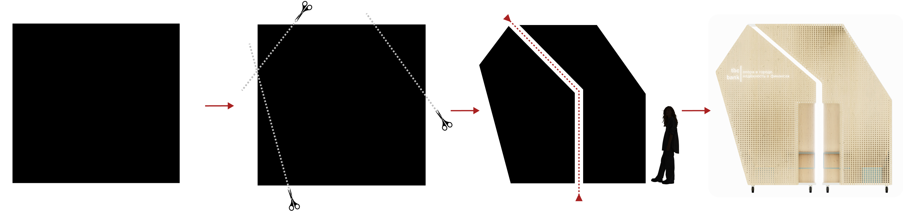
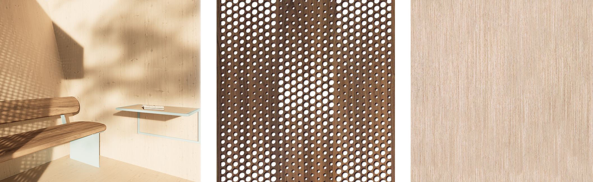
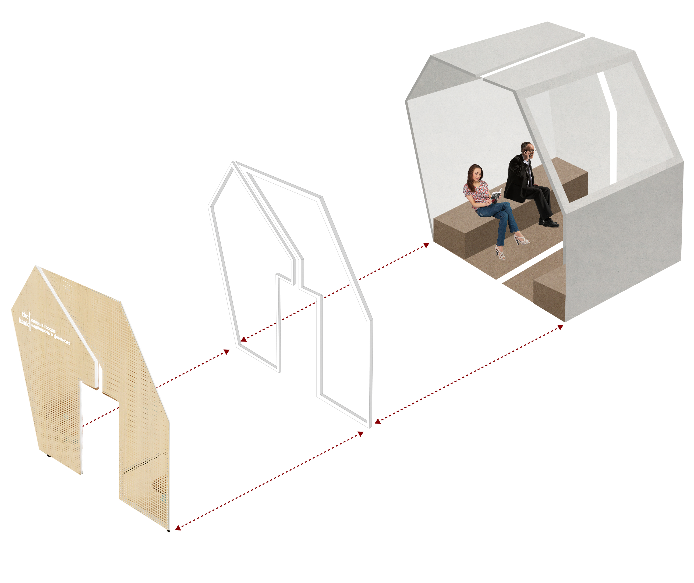
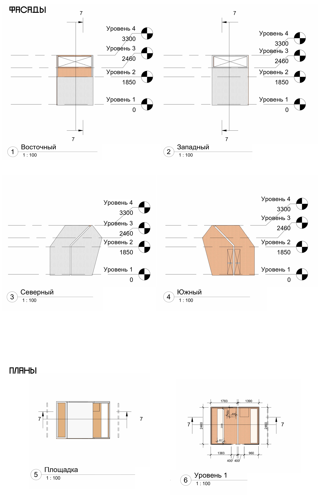
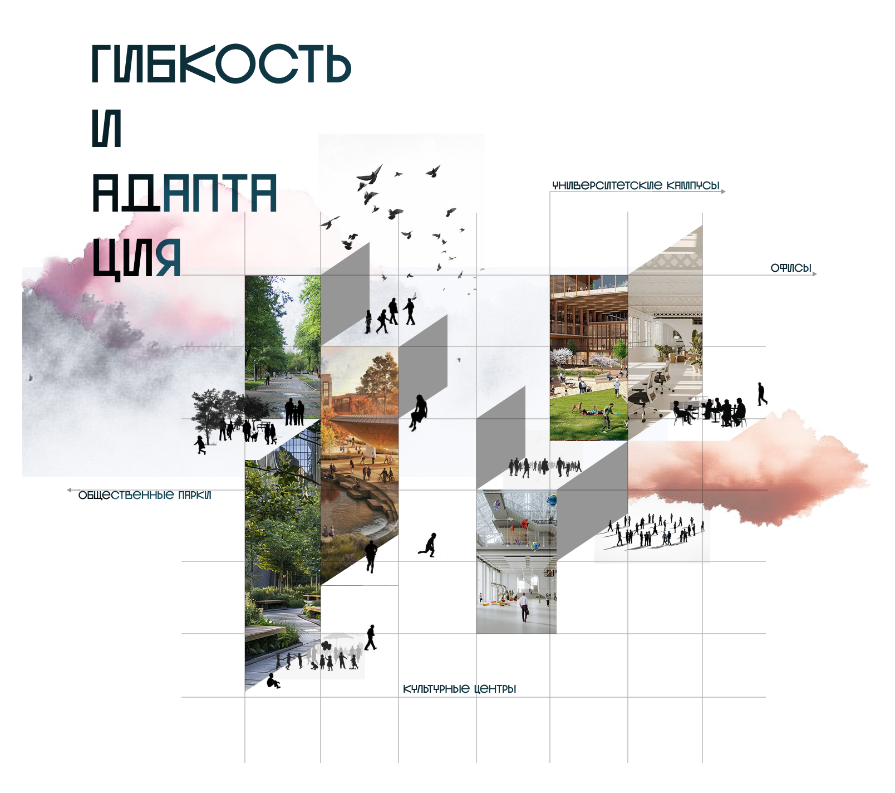
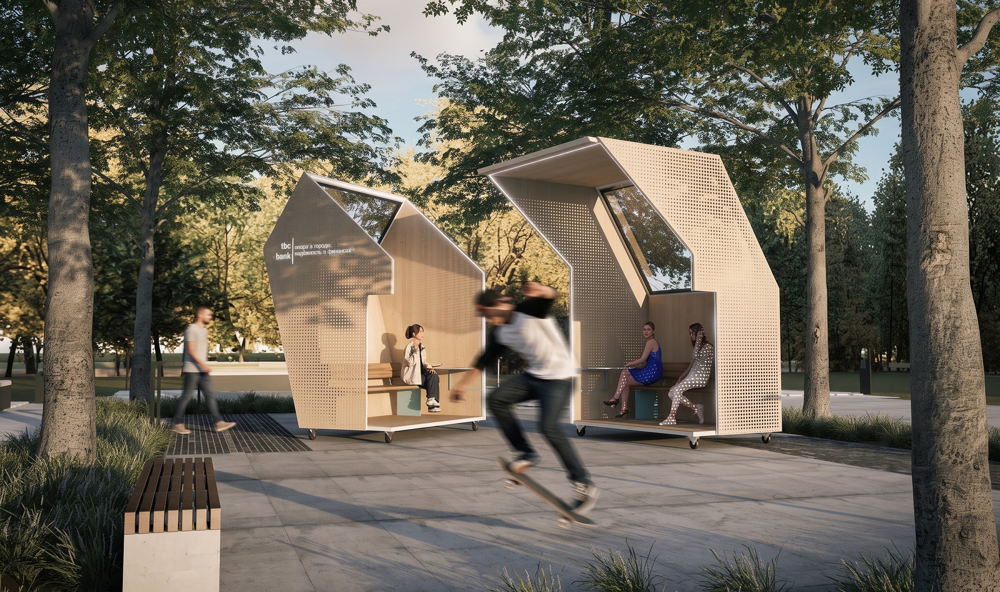
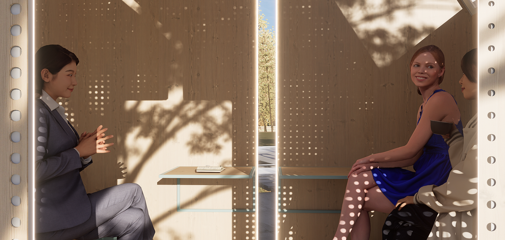
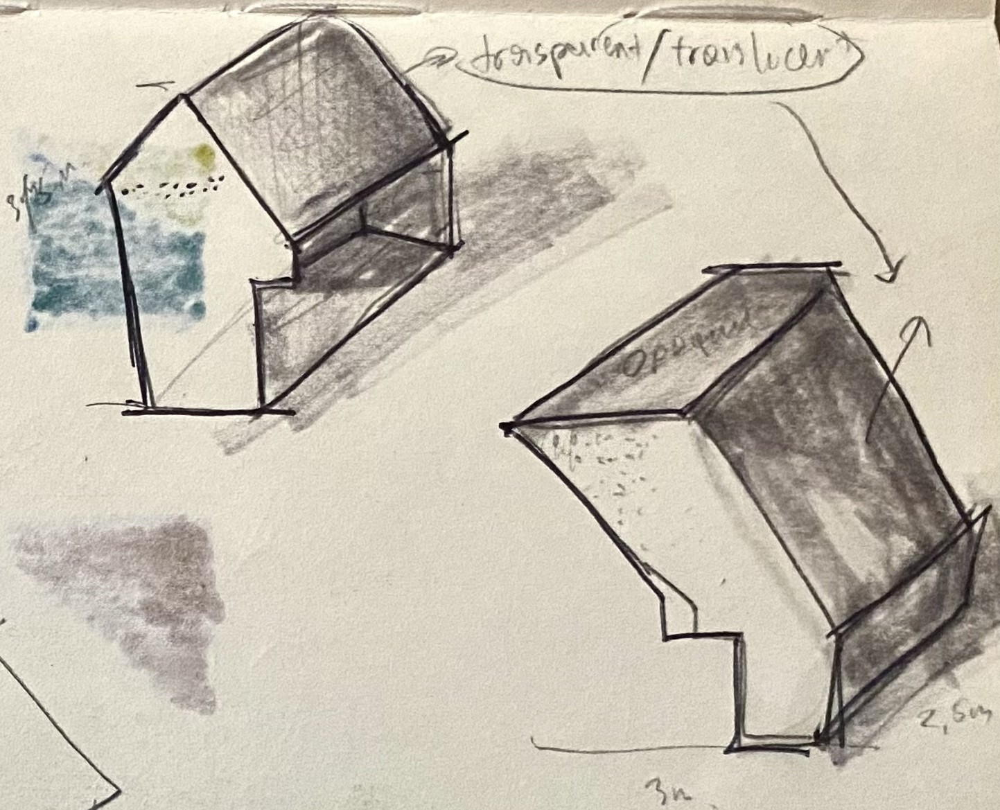
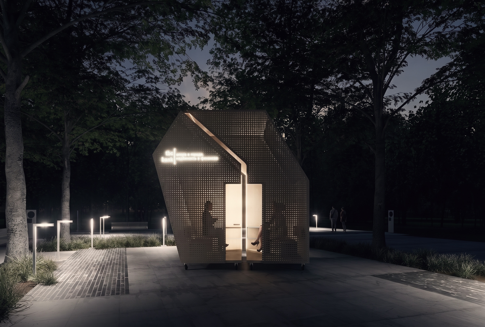

Architect & Researcher + Urban & Exhibition Design
Available for Freelance & Fulltime
Bachelor of Architecture
Based in Tashkent, Uzbekistan
I work at the intersection of architecture and lived experience, exploring how space shapes perception and memory. I'm interested in architecture that emerges from its context and invites interaction. Through experimental design, spatial prototyping, and research, I explore how architecture and urban systems act on us: the felt quality of space, how it moves us. I'm particularly interested in how social relations, cultural memory, and shared spatial practices shape the built environment.








